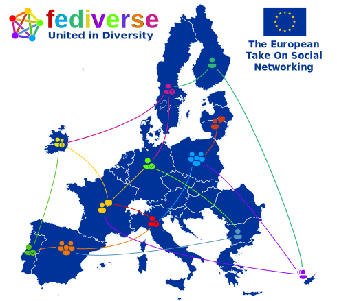
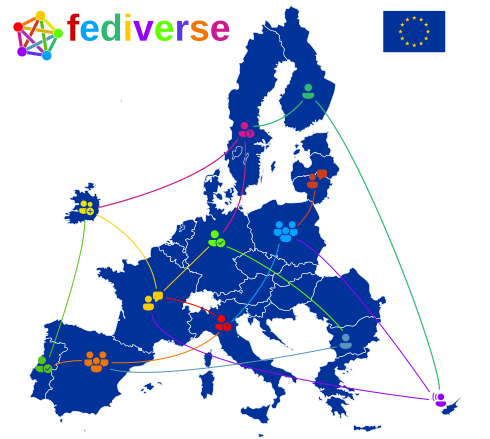

6 posts were split to a new topic: Beyond CMS. Towards federated Content Publishing Services
Definitely heading in the right direction - much more on the Why (they should care) and less on the What (protocols, etc.).
One remark is that there’s no real “action takeaway” - what do we suggest the audience do with this information when the webinar’s over? Assuming you’ve convinced them that the Fediverse is a Good Thing deserving their support, how can they support it? Ideally, of course, they come up with some ideas themselves, but it wouldn’t hurt to have a few answers ready if they ask.
And a couple of specific remarks.
- “reaching their audience” is not a sellable benefit, as their audience is currently on Facebook. Using Fediverse servers is something they need to do despite this, as part of their support (see above).
- the EC already uses and contributes to Drupal (I actually had a hand in that, many years ago), and it’s what they use to publish news and other content types
- internal microblogging: they used to use Yammer, and now have moved to Teams. It will be difficult to wean them off that, particularly DIGIT, who last year tried to kill off a Drupal communities project I helped launch in favour of Teams
- I’m missing EC legal issues - eg EC Directive on transparency - which could support the idea of the EC supporting Fediverse. EC activity on social media, particularly Facebook, opens them to the accusation of being lobbied un-transparently.
3 Likes
@CristinaDeLisle I created a copy of the slide deck to fiddle with (and I don’t have to login).
I want to experiment a bit with what looks good and not. Phew, the presented text is super picky… add a character too much and the slide looks like crap (I use RevealJS myself, but html-based and with custom CSS) 
Only did some stuff with the first 4 slides. Please give me your opinion. @how the first slide contains a hyperlink to the agenda. Is that temporary, or - via BBB - also clickable by participants?
Here’s the deck… will continue tomorrow: @aschrijver temporary copy of EC Event Slide Deck
There is currently slide 16 mentioning GDPR criteria i.e. “Right to be forgotten”. We have to be careful here, because there may be pitfalls. For current fedi and our grassroots use of it GDPR may not be much of an issue, but it will be when EC institutions start to operate things. “Right to be forgotten” may be tricky when your content is federated. But IANAL 
Also I am thinking, and @mathewlowry referred to something similar, that there may be participants playing politics that might want torpedo the webinar by asking especially tricky questions on subjects we bring up.
1 Like
Thank you, @aschrijver - I am working on a version of slides on my own as well. I am focusing on ideas and their structure on slides, not on graphics. I will add graphics during next week and I’m very happy to see suggestions on how to represent the ideas visually, if any. I’m using your feedbacks as well (plus everything that is written around here) and the discussions we had. I am aware of the debate around the right to be forgotten and the fediverse.
@mathewlowry I have seen your feedback as well, thank you for that! To sum up, the meeting on Friday was a free discussion without moderation on the content of the draft slide deck. We did a brief presentation and then discussed about the slides, one by one. No notes were taken to be made public, as it was an informal gathering with the purpose of understanding each other’s views in terms of the draft slide deck and the presentation.
I’m not giving punctual replies / proper explanations to everything around this space due to lack of time. Be assured, however, that I’m considering your ideas for the presentation and welcoming them. 
2 Likes
@CristinaDeLisle some notes on your presentation version (ActivityPub for Administrations - HedgeDoc). I don’t want to edit your version, as they reflect your thoughts and preferred structure.
Feedback on slide 5 and 6
Slide 5 - Centralization
Ad-tech financed R&D → do you mean to say that corporate innovation was payed + determined by Ad-driven biz models?
The other way round is also a factor: Science-driven Ad-tech / UX design full of Deception Patterns (better term than ‘dark patterns’), i.e. expert psychologists, sociologists, behavioral scientists maximizing our engagement (addictive tech).
Can address in next slide under “Incentive to maximize engagement”
Web2.0 dream to nightmare → the situation is even more dire than referred in slide notes.
Tristan Harris: "An unraveling of the social fabric of society and civil wars" (click to expand)
In a 2018 discussion with Tristan, former ethicist at Google and co-founder of Center For Humane Technology (known from The Social Dilemma) he gave these most striking words as reason to their founding: “My biggest concern is an unraveling of the social fabric of society and civil wars.”
Later on, these quotes, also 2018:
“The pen of history is in technology’s hands, and is increasingly steering elections, conversation, beliefs about ourselves, the world, and our friends, children… towards catastrophe in each domain.”
“naming the problem - akin to “tech-accelerated social decay” - but the even more existential/destabilizing version of that arising from tech supremacy over the weaknesses in human mind.”
Slide 6 - Web 2.0 10 years later
Consider mention of “Walled gardens”, do everything to keep users on your platform.
Consider mention of “Severe Vendor Lock-In” where e.g. administrations start to obtain and build on top of platforms that seem initially cheap choices / low-hanging fruit (such as use in Education). Also Big Tech forces de-facto standards upon us, that most of all serve their own needs, e.g. Accelerated Mobile Pages.
Consider addressing the FOSS conundrum: Arguably open-source has eaten the world. Big Tech thrives on it, and has co-opted it. It’s used everywhere in their proprietary SaaS platforms, and they don’t give enough back. They rake in billions and FOSS developers are struggling to earn a living. Also: Big Tech is not innovative anymore, they are just buying out & absorbing innovative stuff.
Incentive to maximize engagement → Biggest issue here is that this provides little incentive to suppress misinformation and fake news, things that “appeal to the underbelly” / “bottom of the brain stem”, as these are huge drivers of clicks.
@CristinaDeLisle one more slide’s feedback 
Feedback on slide 8
Slide 8 - What is ActivityPub?
open standard → open and extensible standard (extend with Linked Data vocabularies for your domain)
built on top of other open standards (ActivityStreams, Linked Data)
Consider addressing Linked Data: both human + machine readable, origin in Semantic Web, Tim Berners-Lee, used by Google Search (SEO), schema.org, Wikidata (all wikipedia knowledge is available as linked data), many EU/EC ISA² solutions (!).
Background: Linked Data is instrumental to the - thus far largely untapped - huge potential of ActivityPub… to extend to any arbitrary application / business domain and build interoperable software on top of it.
1 Like
Feedback on slide 13
Eliminated the ad-tech model / incentive to maximize engagement → There’s a shining examplar of a fedi Humane Technology choice
@CristinaDeLisle an anecdote for the slide notes might be the announcement by Pixelfed’s @dansup to remove engagement features already built, after a user mentioned their addictive nature. Something a traditional social media platform would never do!
Click to read the details + reference to sources
(Copied from https://lemmy.ml/post/59581/comment/47782 )
Very inspiring example here is a recent announcement by @dansup@lemmy.ml the core developer of Pixelfed (the better alternative to Instagram), to revert and remove some features already built. I’ll quote from the toots:
Was recently contacted by someone who mentioned the trending feature has changed the way they use Pixelfed. They find themselves constantly checking like counts and trying to get on the discover trending page by engaging in like-for-like behaviour that is prevalent on other platforms like Instagram.
When I designed the Trending feature, I did not consider the implications of ranking content by like counts. I’ve observed that most trending posts on pixelfed.social belong to a small group of accounts with many followers, making it harder for other users to appear on trending.
Pixelfed cannot be a better and ethical alternative if it ignores the gamification and FOMO dark patterns found on popular platforms. We will fix this. #pixelfed
2 Likes
To me this is too much time spent on talking about what must be destroyed. We should focus more on what we’re doing differently. One slide on walled-gardens should be enough.
Since @j8ter is willing to make a short introduction, I propose we move slide 2 and 3 to another presentation. This makes some space to promote our ways. @natacha, @hamishcampbell and @Sebastian noticed that we do not mention enough:
We should at least have one or two slides on these.
2 Likes
Also we probably need to introduce the #activitypub:fep process which demonstrates a way to discuss issues in a collaborative and concrete manner.
I can talk about the process we use on our instances for dealing with the recurring right-wing trolls and spam - it illustrates how the fedivers is different to the #dotcons and how this can and will scale. Its basic stuff but would be new for people who are not familer with it.
1 Like
Do we have the link for the BBB
Yes, the link is following:
1 Like
In addition to @hamishcampbell in Webinar with the European Commission and AP Community - #195 by hamishcampbell adding notes here for prep call 16 April 3pm CEST, my input for @CristinaDeLisle presentation.
Slide 1 to 11 feedback
Slide 4 Decentralization and the Web
I think it is best if this slide merely contained a Vision Statement, maybe a quote by Tim Berners-Lee or something.
The additional explanation can be in slide notes, and Cristina can briefly address these. I think most of the audience is aware of the early web and many differences, so that can be very brief.
Slide 5 How the web became centralized
Mention of web 1.0 (early web) and web 2.0 (rich web / social web) are concretely defined on Wikipedia, we can avoid mentioning them. A web 3.0 never really existed and it refers to Semantic Web.
As for the title: It is insufficient. There are a host of problems besides centralization. Maybe we can simply title “The Corporate Web” or “Towards a Corporate Web?”.
This slide highlights the trends that occurred under corporate influence: centralization, commercialisation, proprietary de-facto standards, vendor lock-in, walled gardens.
Slide contents need to be revamped imho, and the slide notes jump ahead to Slide 6: consequences
(Prior feedback at Meeting notes for prep call EC Webinar 19 April - #7 by aschrijver)
Slide 6 Web 2.0 10 years later
We can title this “The Open Web is Dying”
Here some good points listed, but the negative impact of today’s quasi-social web are way more far-reaching. Surveillance capitalism, disinformation / fake news are literally eroding society and democracies worldwide!
Tristan Harris (known from The Social Dilemma): “I am most concerned about an unraveling of the social fabric of society and civil wars” and mentioning “tech-accelerated social decay” (might be a bullet point)
We can end this slide with TBL’s “I was devastated” quote. Appearing on click (via slide fragment).
(Prior feedback at Meeting notes for prep call EC Webinar 19 April - #7 by aschrijver)
Slide 7 Re-decentralizing the web
In the explanation of Free Software might be prudent to mention that Copyleft does not mean you cannot earn money with it.
Slide 8 What is ActivityPub?
In more brief bullet points:
- W3C Recommendation since 2018
- Created by W3C Social Community WG
- Interoperable Messaging Protocol
- Facilitates decentralized (web) apps
- Not controlled by any one entity
- SocialHub / SocialCG innovation center
Slide 9 Diagrams…
Here we might include @mathewlowry’s enlightening diagrams on what distinguishes federation between diverse apps from traditional centralized social media.
It can be a quick follow-up of diagrams and does not need much time in additional explaining.
Slide 10 What is it used for?
I changed “Sharing Videos” to “Sharing Media” and then mentioned both “PeerTube (video), CastoPod (podcasts)” by @benjaminbellamy. Podcasting is a great domain to mention (PS. I have invited casto to SocialHub). They are French and they are training ppl to roll out the software in schools… (@wakest has more info).
At “Sharing Knowledge” added “Drupal, SkoHub, OLKI (Science)”. OLKI focuses on all aspects of Open Science publishing.
Added FedeProxy by @dachary to “Sharing Code”. They recently received NGI DAPSI funding.
Might be good to add more than one app in most categories. United in diversity, these will eventually interoperate…
Slide 11 The Fediverse is a European take on social networking
I added the slogan “Social Media Reimagined”. I am using it a lot, didn’t discuss on the forum yet. Got very positive feedback so far for using this as a rallying cry. Would be great to see this be the credo of SocialHub community. See also: Webinar with the European Commission and AP Community - #102 by aschrijver
Can remove it from here to make room for the diagram, but I’d us to consider mentioning elsehwere then.
Maybe to avoid having @CristinaDeLisle employ a term she’s not at ease with: “Corporate Web”, we could use another one more attuned to the opening quote, and that would make very clear what the problem is about: The Web Enclosure in reference to the Inclosure Act in England.
Looks great
1 Like
For some reason the last slides are broken… I tried giving a different title (which is up for discussion, btw)
Hello! Thank you for this presentation, looks great! I’ll be joining on monday on behalf of Castopod with @benjaminbellamy. I’ve updated the slide 10 from CastoPod to Castopod (small detail). If you need anything from us, let us know!
2 Likes
Wonderful that you can join and welcome to the club here 
2 Likes
Hello,
I’ve added an image with the EU countries flags and the fediverse symbol on it. I found it challenging to find a map of the fediverse which does not contain specific projects mentioned or clear suggestions of some. On the EU side, I found it challenging to find a proper map that does not contain UK. It’s eye opening to see how challenging things are to try to maintain a clear / unifying vision when multiple parties are involved - if it’s complex to find representative maps and things change so fast in the landscape. Feel free to let me know if you find something else which looks better.
I need to check better how to add some ideas from Mathew’s suggestions, so I will work on that tomorrow.
Thank you again for your all your help and please ping me if you need something on my side, since I am around for the weekend.
cc @aschrijver @j8ter I mention you so you see this message, since you’ve said you’re around as well regarding graphics / slides.
2 Likes
Yes, challenging. I also looked for a map for the announcement image and couldn’t find a proper one.
On the one hand I like the image, with the different country flags symbolism for United in Diversity, and fedi multi-color logo standing for the same concept.
On the other hand country flags also represent nationalism. United in Diversity would mean that the flags would be less important. And maybe it is possible to show how fedi can be ‘rolled out’ over the EU. I created a concept of this (started with a concept, but fiddled it to completion):
SVG original version, transparent, no border:

SVG white text for the presentation:

PNG version (900 x 806), white background, black border:

Images used (either CC0 or MIT):
- File:EU27-2020 European Union map.svg - Wikipedia
- Fediverse - Wikipedia
- https://www.svgrepo.com/svg/311075/person-feedback
- https://www.svgrepo.com/svg/311068/person-available
- https://www.svgrepo.com/svg/311057/people-community
- https://www.svgrepo.com/svg/311076/person-question-mark
- https://www.svgrepo.com/svg/311079/person-voice
- https://www.svgrepo.com/svg/311055/people-add
- https://www.svgrepo.com/svg/311063/person
{kind=link}
{kind=link}
@CristinaDeLisle I don’t mind which image to use. You be the decider. I used the one above in an announcement toot. Because of the image dimension I incorporated the slide title.